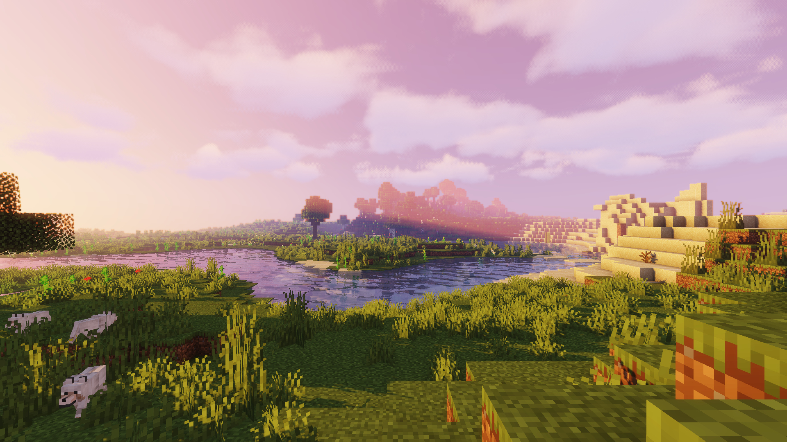
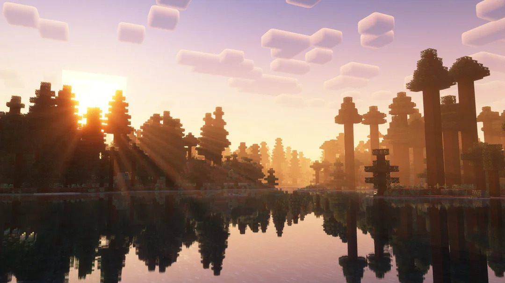

L'Overworld
L'Overworld est la dimension principale dans Minecraft, où la plupart des joueurs passent leur temps. Il est composé de divers biomes, tels que des forêts, des déserts, des océans et bien plus encore. C'est une vaste étendue de terrain à explorer, où vous pouvez construire, miner, et survivre.
Caractéristiques de l'Overworld
- Biomes variés : Découvrez une multitude de biomes uniques avec leur propre flore et faune.
- Mines et cavernes : Explorez les profondeurs de la terre à la recherche de minerais précieux.
- Villages : Trouvez des villages peuplés de PNJ avec lesquels vous pouvez échanger.
- Structures : Découvrez des temples, des manoirs et d'autres structures générées.
Galerie de l'Overworld

